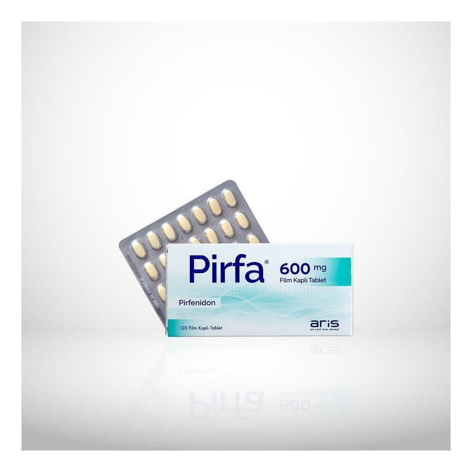

Pirfa 600 mg Film Kaplı Tablet, 120 Adet

Ne için kullanılır
KT · Bölüm 1PİRFA®, etkin madde olarak pirfenidon içerir ve yetişkinlerde hafif ve orta derecede İdiyopatik Pulmoner Fibrozis’in tedavisinde kullanılır. Açık sarı renkli, oval film kaplı tabletler 120 film tabletlik blister ambalajlarda ve karton kutuda takdim edilmektedir.
İdiyopatik Pulmoner Fibrozis (İPF), akciğer dokusunun şişip zamanla yara dokusuna dönüşmesi ve derin nefes almanın güçleştiği bir durumdur. Bu durum, akciğerlerin düzgün çalışmasını engeller. PİRFA, yara dokusu oluşumunun ve şişmenin azaltılmasına ve daha iyi nefes almanıza yardımcı olur.